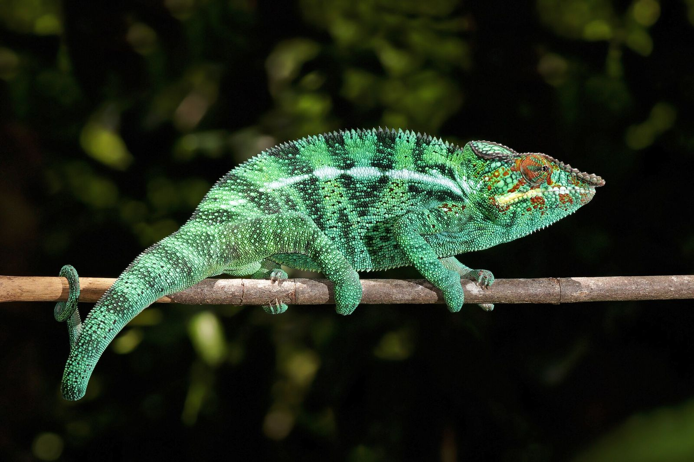
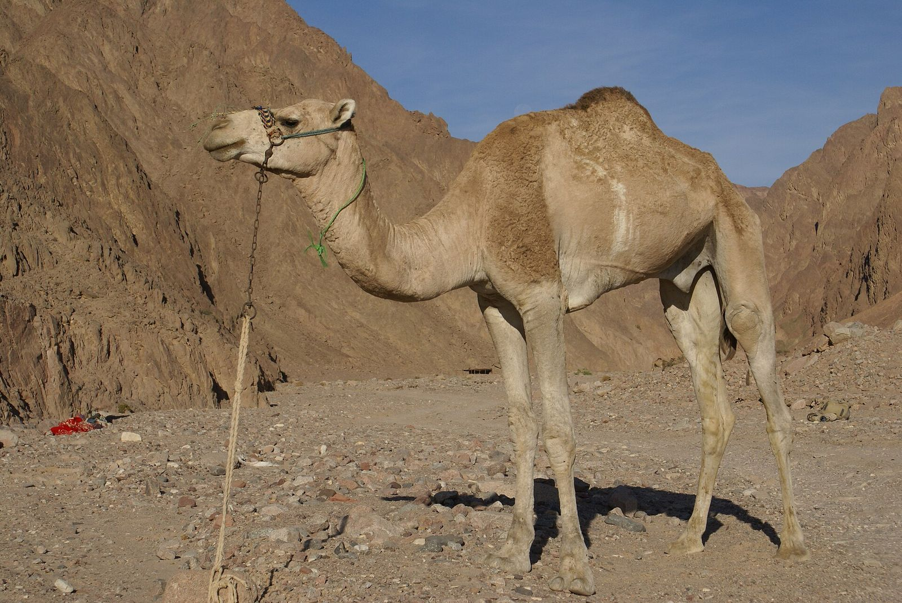

Year 9 Science · Lesson 5
Adaptations
Structural, behavioural and physiological
Panther chameleon, Nosy Be. Charles J. Sharp. CC BY-SA 4.0
_male_Nosy_Be.jpg){kind=link}

Starter
How does a camel survive the desert?
List everything you can think of. Then watch the video.
Dromedary, Sinai. Florian Prischl. CC BY-SA 3.0

Camel
What's in the hump?
Most people say water. It's fat. The camel can break it down for energy when food is scarce.
- Long eyelashes and nostrils that close keep out sand.
- Wide, padded feet spread out on soft sand.
- Very little urine and very dry dung save water.
- Can drink more than 100 litres in about ten minutes.
Each of these features gives the camel an advantage in the desert. Each one is an adaptation.
Key word · Lab manual p11
Adaptation
An adaptation is a feature, characteristic or trait that gives an organism an advantage in its environment.
Adaptations build up over many generations. A single camel can't grow a bigger hump because it needs one.
How they build up is natural selection. That's coming in Lesson 8.
Three types
Structural, behavioural, physiological
Chameleon: eyes that swivel separately; a long, sticky tongue.
Chameleon: walks with a slow, rocking sway, like a leaf in the breeze.
Chameleon: changes skin colour to signal or blend in.
Quick test. Can you see it on a photo? Probably structural. Is the animal doing it? Behavioural. Is it happening inside? Physiological.
Lab manual p11
Sort these into the table
Then add two of your own to each column.
Check your table
Answers
- A cactus's spines
- A polar bear's thick fur
- A duck's webbed feet
- Penguins huddling together
- Birds migrating for winter
- Possums being active at night
- Snakes producing venom
- Camels producing very little urine
- Humans sweating to cool down
Lab manual p11 Q1
Some adaptations fit two columns
Choose one and explain why.
- Venom is made inside the body (physiological), but the fangs that inject it are structural.
- Sweating is a process (physiological), but it needs sweat glands (structural).
- Camouflage: a moth's bark-coloured wings are structural, but choosing to rest on matching bark is behavioural.
Name the part you mean. "The venom gland" and "making venom" are different types.
Watch
Adaptation spotting
For each clip, record: animal · adaptation · type · how it helps.
- Planet Earth II: iguana vs racer snakes
- Blue Planet II: octopus in a suit of shells
- Emperor penguins huddling through winter
Links search YouTube for each clip.
Careful
Not every feature is an adaptation
Whales have small leftover hip and leg bones buried in their bodies. They don't help the whale swim. They are left over from ancestors that walked on land.
A feature that has lost its use is vestigial. To call a feature an adaptation, you have to show the advantage it gives now.
You have one too: your tailbone.
Generalise
The big idea
Characteristics of living things include adaptations: structural, behavioural and physiological.
Every living thing has adaptations that help it carry out MRS C GREN in its own environment. A camel's adaptations would be useless to a penguin, and the other way round.

Exit question
Name the type of each kiwi adaptation
Nostrils at the tip of its long beak · feeding at night · a lower body temperature than most birds, which saves energy
Structural · Behavioural · Physiological
North Island brown kiwi. The.Rohit. CC BY 2.0

Away today?
Missed this lesson? Catch up here
- Copy the definition of adaptation and the three types, with one example of each.
- Lab manual p11: sort the nine examples, add two of your own per column, and answer Q1.
- Watch one clip from slide 9 and record one adaptation and its type.
- Write one sentence on why whale leg bones are not an adaptation.
- Exit question: the type of each kiwi adaptation.